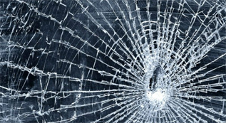
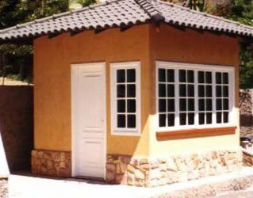
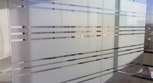

Linha Arquitetônica
A utilização de Film produz solução atrativa e eficiente.
- Segurança e Proteção:
Ocorrendo a quebra do vidro, o film mantém os estilhaços firmemente presos, reduzindo ou até mesmo eliminando o risco de ferimentos. Auxilia na segurança e proteção industrial, comercial e residencial contra acidentes, tempestades e vandalismo; mesmo após ter sido quebrado, o vidro revestido com film mantém sua característica principal. Films especiais chegam a aumentar a resistência do vidro à pressão de 3 até 17 vezes.

- Privacidade:
Alguns films são altamente reflexivos, permitindo a visão de dentro para fora, mas não permitindo a visão de fora para dentro, são extremamente adequados para guaritas de edifícios, bancos, divisórias de ambientes, áreas de segurança, etc. Outros produzem total privacidade (jateados), mantendo a claridade do ambiente e impedindo, no entanto, a visão nos dois sentidos.

- Redução dos Custos de Refrigeração:
Ao instalar um film adequado para controle solar, obtém-se significativa redução dos altos custos com refrigeração. No verão o film reflete a energia solar em até 79%, evitando o aquecimento do ambiente; e no inverno, pela isolação térmica do film, a troca de calor do interior do ambiente com o exterior é muito reduzida. Por isso, são largamente utilizados em centros de processamento de dados (CPD).
- Redução da Descoloração:
Embora invisível aos olhos humanos, os raios ultravioleta provocam desde câncer de pele até a descoloração e deteriorização de carpetes, quadros, cortinas, móveis e de muitos materiais sintéticos. O film pode bloquear até 99% destes raios nocivos, impedindo praticamente, os danos por eles causados.
- Aparência Adequada:
O film produz aparência clara e uniforme, juntamente com sua variada gama de cores e tipos, poderá se adequar à sua decoração, criatividade arquitetônica ou a seu design comercial. Ele pode ser usado em áreas envidraçadas já existentes ou a construir, produzindo boa aparência e, consequêntemente, aumentando seu valor comercial.
- Decoração de Interiores:
Film permite a decoração de vidros e janelas utilizando o mesmo processo do papel de parede. Durável e resistente, permanece novo por muitos anos garantindo a transparência e luminosidade das cores.

Confira as vantagens de possuir em seu ambiente este produto de qualidade internacional:
- Maior privacidade em espaços divididos por portas e janelas
- Renovação do ambiente sem a necessidade de reformas
- Portas de varandas e banheiros ganham destaque e visibilidade.
 (24) 98816-7547
(24) 98816-7547